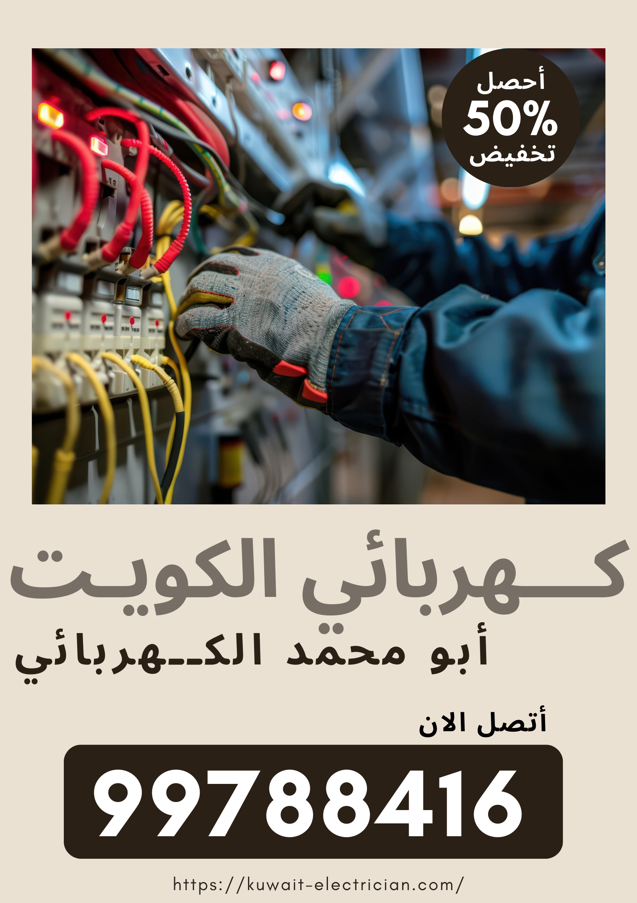
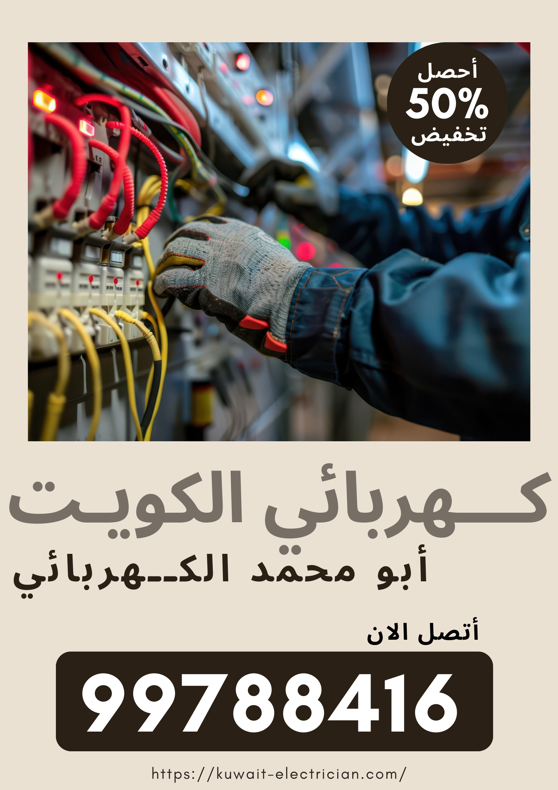

تصليح شورت كهربائي نوفر جميع قطع غيار الكهرباء كل المقاسات والاحجام السكني والتجاري والصناعي باقل سعر مضمون الجودة هدفنا خدمة كهربائي منازل بالكويت تمديدات كهربائية تاسيس بيوت ورشة لإصلاح جميع اعطال الكهرباء معلم كهرباء متخصص تصليح كهرباء وصيانة أي خلل أو عطل في الكهرباء أو توصيلاتها، صيانة أسلاك الكهرباء، تمديد وتركيب مختلف الأسلاك أو الوصلات الى كافة الغرف في المنزل، تركيك كهرباء المنازل القديمة أو الجديدة بأرخص الاسعار فنين مختصين بأعلى درجات الخبرة و الكفاءة، إستعداد تام لتلبية كافة طلباتكم على مدار الساعة اتصل بنا على رقم كهرباء منازل الكويت 99788416 .

كهربائي
نعنى في شركتنا في كهربائي منازل الكويت على توفير العديد من الخدمات أو الأعمال
الكهربائية
وقدمنا كهربائي منازل في الكويت معلم كهربائي بالكويت أم كهربائى منازل ومنها :
- يعمل كهربائي على فحص كامل و شامل لكهرباء المنزل.
- تمديد أسلاك كهربائية جديدة بدل التالفة لأي مكان في المنزل.
- تركيب ليتات سبوت لايت بمختلف الألوان و الأحجام.
- ونحن تركيب إضاءة داخل أو خارج المنازل أو الفلل.
- تصليح أعطال مختلف الأجهزة و التمديدات الكهربائية لكل مناطق الكويت.
- الكشف عن الأعطال داخل المنزل من خلال صيانة كافة الأسلاك أو التمديدات بجميع مناطق الكويت
- كهربجي منازل بالكويت
- فنى كهربجي منازل بالكويت.
كهربائي منازل
لكل من يبحث عن كهربائي منازل بالكويت خدمة منازل 24 ساعة ويعمل بدقة وجودة عالية أو عمل مضمون مع
الكفالة
فليتصل بنا على كهربائي الآن لاننا نتبع تعليمات السلامة والصحة المهنية ونوفر طاقم عمل مدرب
بشكل محترف علة
جميع اعمال كهربائي الكويت, خدمة كهرباء الكويت اهلا بكم بشركة كهربائي بالكويت الفلل.
- خدمة كهرباء بيوت
- شركة كهربائي الكويت
- كهربائي بالكويت 24 ساعه
- فحص واصلاح شورت الكهرباء
- اصلاح وصيانة الاسوار
- معلم كهربائي منازل
كهربائي منازل الكويت
هل تريد فني كهربائي منازل الكويت؟ تعد الكهرباء من الضرورات الأساسية أو التي من المستحيل
الإستغناء عنها
في وقتنا لذلك عليها الإعتماد في تشغيل الكثير من الأجهزة التي تعد عصب حياتنا من كمبيوترات أو
إضاءة أو غسالات
و غيرها، ولكن قد تتعرض التمديدات أو التوصيلات الكهربائية الى الكثير من الأعطال والتي لابد
من إصلاحها بشكل
سريع و فوري.
- 1- فني كهربائي منازل كهربائي القرين
- 2- فني كهربائي منازل المنطقه العاشره
- 3- فني كهربائي منازل جنوب السرة
- 4- فني كهربائي منازل حولي السالمية
- 5- فنى كهربائي منازل الفروانية خيطان
- 6- فنى كهربائي منازل الجهراء جليب الشيوخ
- معلم كهربائي منازل الكويت
كهربجي منازل يسرنا تقديم خدمة متخصصة بتمديد وايرات كهربائية أو مقوي سيرفس أو ستلايت أو انترنت
راوتر واي فاي أو تركيب
انتركم أو تمديد بلاكات جديد أو تركيب معلقات كهرباءيات مرايا كهربائية جام زجاج سكريت أو قفل
الكتروني, باب
كهربائي بالكويت أو فتح اقفال الأبواب اصلاح شورت
السور وجميع اعمال الديكور الخشبي أو الجبس نبور الكهربائية
انارة مخفية أو أنارة الحدائق وتوفير جميع
الون الانوار أو الاضائات حسب الطلب اتصل بنا كهربائي منازل جميع مناطق الكويت.
فني كهربائي
يوفر فني كهربائي لكم في مؤسسة كهربائي الكويت فني كهرباء منازل الكويت أمهر الفنين الذين يقومون مثل تصليح أعطال
الكهرباء
صيانة مختلف أعطال التمديدات الكهربائي أو تمديدات كهرباء العمارات ومنها :
- الصدمات الكهربائية.
- كهربائي بالكويت تكييف مركزي
- ارتفاع فاتورة الكهرباء بشكل كبير.
- نزول القواطع الكهربائية بشكل متكرر.
- الإحتراق المتكرر للمصابيح و الليدات الكهربائية.
- معلم كهربائي منازل في الكويت
فني كهربائي منازل الكويت
لاننا نوفر فني كهربائي منازل الكويت خبرة ومحترف تنكنا من حل جميع المشاكل الكهربائية في البيوت السكنية أو
التجارية,
لأن أعطال الكهرباء متنوعة جدا” و كثيرة عدا عن خطورة التعامل مع الكهرباء فلابد لك عميلنا
الكريم من الإستعانة بخدمات
فنى كهربائي منازل ليعمل على إصلاح كهرباء جميع المشكلات التي تواجهك في كهرباء
منزلك أو شركتك، نوفر أكفأ
الفنين المتخصصين كهربائي منازل الكويت مع أحدث الأجهزة التي تمكنهم من الكشف عن أي
خلل أو عطل أينما كان في المنزل
أو التمديدات الخارجية له:
- فني كهربائي منازل القرين
- كهربجي منازل فني كهربائي منازل حولي
- فني كهربائي منازل السالمية الرميثية
- فني كهربائي منازل السرة الروضة قرطبة
- فني كهربائي منازل كيفان الشامية الفيحاء
- فني كهربائي منازل الفروانية خيطان الرحاب
- فني كهربائي مخيمات الكويت
- فني كهربائي منازل الجابرية سلوى مشرف
- فني كهربائي منازل مبارك الكبير القصور العدان
- فني كهربائي منازل صباح السالم المسايل المسيلة
- كهربائى منازل الاندلس كهربائي منازل الفردوس العارضية
كهربجي
هل تبحث عن كهربجي متخصص اعمال كهرباء المنازل بالكويت؟نعم نحن شركة متخصصة بتوفير فني كهربائي منازل
الكويت
يمكنكم الان طلب رقم اقرب فني كهربائي منازل من بيوتكم من خلال الاتصال أو التحدث مع خدمة العملاء أو
الدعم
الفني وطلب معلم كهرباء أو كهربجي منازل خبرة بجميع الاعمال الكربائية المنزلية أو التجارية وتمديد
الكابلات أو
الوايرات الداخلية وتمديد بلاك جديد وتركيب شخان ماء ( بيلر ) أو تركيب غسالات اتوماتيك,
- كهربائي تركيب ثريات
- احسن فني كهربائي في الكويت
- فني كهربائي تركيب معلقات
- معلم كهربائي تركيب سخان الماء
- خدمة كهربائي تمديد وايرات ستلايت
- خدمات كهربائي مقوي سيرفس شبكة اتصال وانترنت
- كهربائي منازل الكويت وقت اثناء الحظر
- معلم كهربائي منازل
- افضل فني كهربائي منازل معلم كهربائي منازل هندي
يعمل المختصون كهربائي منازل الكويت لدينا في إصلاح أو صيانة الكهربائيات أو على معالجة الأعطال الآتية :
- 1- أعطال المقابس الكهربائية : حيث يعمل على فحصه بدقة بعد فكه و ربط أي جزء مفكك فيه.
- 2- تلف في أسلاك التوصيل : حيث يعمد الفني الخبير الى تغير كافة الأسلاك المعطوبة بعد التأكد
من تآكلها و تمديد أسلاك من نوعية ممتازة تتحمل قوة التيار الكهربائي. - 3- أيضا اعطال الإنقطاع المفاجئ في التيار الكهربائي.
- 4-وحل أعطال الإضاءة أو المصابيح الكهربائية
- 5- فني كهربائى منازل في خدمتكم جميع مناطق الكويت.
فني كهرباء
إن الإستخدام الكبير أو المستمر للكهرباء قد يؤدي الى كثرة حدوث الأعطال في العديد من
الأجهزة أو التوصيلات
الكهربائية في المنازل، و يعمل فني كهرباء في مجال إصلاح وصيانة
أعطال الكهرباء المتنوعة نوفر لكم أفضل فني
كهربائي منازل الكويت الذين يقومون بخدمة
تصليح وكافة تمديداتها بكفاءة و إتقان.
يعمل فني كهرباء على توفير العديد من الخدمات المميزة بخدمة كهربائي منازل الكويت ومنها :
- تركيب إنارة كاملة لداخل و خارج المنزل.
- توصيل الأسلاك و التمديدات لكافة غرف المنزل.
- تغير القواطع التالفة و المتعطلة.
- معلم تركيب ليت مخفية Led.
- خدمات تركيب سبوت لايت في أي مكان في المنزل.
- توصيل الكهرباء للمنزل من القاطع الرئيسي.
- إصلاح أعطال المقابس الكهربائية بكل حرفية.
- صيانة عداد الكهرباء الرئيسي لتنظيم الفاتورة المرتفعة.
- كهربائي منازل هندي أو كهرباء منازل مخيمات البر
- فني كهربائي الكويت وستحصل على قدرات كهربائى منازل
- كهربائي تصليح شبكات الانترنت كهربائي تصليح شبكة اتصال
- افضل فني كهربائي منازل تصليح صيانة تركيب معلم كهربائي منازل باكستاني.
معلم كهربائي منازل
إن التعامل مع الكهرباء أو أعطالها المتنوعة يحتاج الى عامل إختصاصي و خبير وذلك تسبب الخطورة الناجمة
عن
الإقتراب من الكهرباء أو عدم المعرفة في كيفية إصلاحها، لذلك يجب عليك صديقي العميل الإستعانة
بخدمات فني
كهربائي منازل الكويت التي تخصص بتقديم كافة الأعمال المتعلقة بصيانة مشاكل كهربائية
أو الكهربائية العديدة في
المنازل جميع مناطق الكويت كهربائى منازل.
يقوم معلم كهربائي منازل باستخدام طرق مختلفة تساعدنا في الكشف عن العطل حيث نستخدم :
- الطرق التقليدية:
نستخدم فيها بعض المعدات اليدوية كالمفكات و البطاريات و ذلك ضمن المنازل و البيوت
لخدمة أفضل تواصل مع فني
كهربائي منازل بالكويت.
- إستخدام أجهزة متطورة:
مثل جهاز الميكرو و التلفكس و الإختبار، حيث تعيننا هذه الأجهزة على تحديد مكان العطل بشكل دقيق للقيام
بإصلاحه
لجميع اعما الكهربائيات اتصل في فني كهربائي منازل بالكويت.
- الكشف الفيزيائي:
و التي تعتبر طريقة دقيقة للغاية في الكشف عن العطل ثم القيام بإصلاحه
لعمل فحص شامل نوفر لكم فني
كهربائي منازل بالكويت.
كهربائي هندي
كهربائي منازل الكويت لخدمات تمديد و تركيب الكهرباء و كافة توصيلاتها و خدماتها في كافة مناطق أو أرجاء الكويت،
يتعهد كهربائي هندي بالقيام بتمديد و تشطيب كل الخدمات الكهربائية للشقق أو الطوابق السكنية أو التجمعات
أو
المنازل، خبرة عالية و أعمال في غاية الدقة، تركيب أفضل المواد أو الأسلاك أو القواطع أو أجهزة
الإنارة ذات
الكفاءة و التي نقدمها مع الكفالة أو الضمان مع فني كهربائي في الكويت.
تتصف خدماتنا بالعديد من الصفات الفريدة و التي تميزنا عن غيرنا و منها :
- إلتزام تام بالوقت و المواعيد المحددة حيث أن التسليم يكون ضمن المدة المحددة المتفق عليها.
- نلتزم بالمخطط و طرق التنفيذ و كافة التعليمات.
- فحص كافة الأعمال و الخدمات قبل تسليمها للتأكد من سلامتها.
- خبرات كبيرة نتمتع بها من خلال كفاءة اليد العاملة لدينا.
- يوفر كهربائي هندي أسعارا” تنافسية و تشجعية للجميع لأي نوع من الخدمات.
- كهربائي منازل هندي أو كهربائي منازل باكستاني
- الكويت فني كهربائي الكويت ويتوفر كهربائى منازل
- كهربائي كاميرات مراقبة منزلية أو متخصص كاميرات مراقبة الكويت
فني كهربائي منازل
عند القيام بأي عمل يتعلق بالكهرباء في المنزل سواء تمديد أو تصليح أو صيانة أو فحص فلابد لكم من الإستعانة بخبير كهربائي يمتلك خبرة واسعة في كيفية التعامل مع كل الأعمال التابعة للكهرباء و ذلك حرصا” على سلامتكم، و يقدم فني كهربائي منازل لكم أفضل العاملين أو الخبراء الكهربائين الذين بإمكانهم تقديم أي عمل أو اي خدمة بكل حرفية ودقة و إتقان. اطلب الان خدمة فني كهربائي منازل الكويت بكل ثقة نحن الافضل كهربائى منازل:
- افضل كهربائي منازل الجهراء
- افضل كهربائي منازل الصليبيخات
- افضل كهربائي منازل الاحمدي
- كهربائي منازل الفحيحيل
- كهربائي منازل المنطقه العاشره
فني كهرباء منازل بالكويت
الان ومع تطور جميع الاجهزة اللكترونية أو التلفونات أو دارات الكهرباء يجب ان يتمتع جميع
بيوت الكويت بخدمة
كهرباء منازل بشكل احترافي ولعدة اسباب مثل ارتفاع درجات الحرارة
العالية جدا وعدم التحمل ولو لدقائق بدون
الكهرباء التي تشغل تكييف مرزي او مكيفات
الهواء أو ثلاجات المنزل وغيرها, فاننا عمانا علة توفير خدمة كهربائية
افضل من السابق,
بواسطة فني كهرباء منازل بالكويت
يعمل الخبير الكهربائي على تقديم الأعمال التالية :
- صيانة كافة الوصلات و التمديدات الى الأجهزة الكهربائية.
- توصيل الكهرباء الى كافة الأدوات و التجهيزات الكهربائية.
- توزيع اللمبات و أجهزة الإنارة داخل و خارج المنازل.
- إصلاح أي مشكلة في عداد الكهرباء و القواطع.
- فحص و تصليح المقابس و المآخذ الكهربائية.
- كهربائي منازل شاطر ورخيص
- نحن وفرنا فني كهربائي منازل بالكويت
- كهربائي تصليح ثلاجات أو فريزرات او برادات او مجمات.
كهربائي الكويت
نعم انه كهربائي منازل ممتاز لقضاء حاجاتنا اليومية لابد لنا من استخدام الكهرباء سواء في العمل أو في
المنزل
لأن جميع أعمال كهربائي الكويت ترتبط بالكهرباء أو استخدامها، وقد تتعرض التمديدات أو التوصيلات
الكهربائية الى أعطال عدة
على المدى البعيد بسبب الإستعمال اليومي أو المكثف الشيء الذي يستوجب الإستعانة بخبير
كهربائي أو مصليح
كهربائي او كهربائي منازل الكويت سريع ليتمكن من حل كل المشاكل أو الأعطال الكهربائية.
و لخدمة مميزة ننصحك أيها العميل الكريم بطلب خدماتنا مع فني كهربائي منازل بالكويت
نظراً لما نؤمنه من عمال
أو خبراء كهربائين
يتمتعون بخبرات واسعة بموقع كهربائي منازل الكويت ومنها :
- إتقان أي عمل في مجال صيانة و إصلاح الكهرباء.
- مهارة في إستعمال وسائل و معدات التصليح الكهربائية.
- إستعداد تام للعمل و تقديم الخدمة في أي زمن يطلب منه
- فني كهربائي الكويت
- كهربائي تصليح غسالات اتوماتيك.
رقم كهربائي منازل
عندما نريد أن نقوم بإجراء تمديد كهربائي للمنزل الجديد أو تغير التمديدات القديمة التالفة أو الأسلاك المتآكلة
فإننا يجب
أن نلجأ الى فني كهرباء منازل الكويت أو مصلح كهربائي يجيد التعامل مع كافة أعمال الكهرباء من إصلاح
أو صيانة أو تركيب
لكي نتلافى الأخطار الناجمة عن التصليح الخاطئ أو التي لابد أن نتعرض لها بسبب قلة خبرتنا،
لذلك قمنا في شركتنا
بتوظيف العاملين الخبراء أو الذين لديهم إلمام واسع في المجال الكهربجي مثل كهربائي منازل
الكويت خبرة 15 عاما
فني كهربائي الكويت الآن, تواصل الآن مع رقم كهربائي منازل 99788416 ليصلك مباشرة.
إن الخبير الكهربائي يجب أن يتمتع بصفات عديدة منها كهربائى منازل :
- كفاءة مع خبرة واسعة و طويلة في العمل في مجال الكهرباء.
- إمكانية التعامل مع كافة أعطال و مشاكل الكهرباء و إصلاحها.
- العمل بحرص و دقة و هدوء مع السرعة في الإنجاز.
- معرفة بكافة الطرق و الوسائل المستخدمة في الإصلاح.
- معرفة واسعة بإستعمال أدوات التصليح المختلفة.
كل هذه الصفات و غيرها نوفرها في عمالنا و من أجل ذلك ندعوك لتجربة خدماتنا لأنها الأفضل على الإطلاق
خدماتنا
في فني كهربائي الكويت, رقم كهربائي منازل متاح دائماً.
صيانة واصلاح كهرباء المنازل
جميعنا معرضون لحدوث أعطال أو انقطاع أو حدوث شورت بكهرباء المنزل أو السور ( السياج ) أو مشاكل
متنوعة في
كهرباء منازلنا او المنشئات ويعود ذلك لأسباب عدة منها تآكل الأسلاك الواصلة بين الأجهزة
الكهربائية او العداد
الأساسي في المنزل أو تلفها نتيجة للإستعمال الكثيف أو بسبب رداءة صناعتها أو نوعيتها،
كما أننا قد نعاني من
إرتفاع قيمة فاتورة الكهرباء نتيجة لعطل ما أو تسريب الكهرباء لتتمتع بمميزات إصلاحات
كهرباء البيوت وفرنا
كهربائي منازل الكويت هاتف فني كهربائي.
و نحن في شركتنا نعمل إصلاح و صيانة عامة لكهرباء المنزل من خلال فني كهربائي :
- صيانة كافة الأزرار و المقابس و القواطع.
- تغير جميع الأسلاك التي أصابها تلف سواء كان تلف صغير أو كبير.
- تغير أجهزة الإنارة و اللمبات و استبدالها بأنواع توفيرية.
- إستخدام الأنواع المتينة و القوية من الأسلاك.
- إحكام التمديد و التوصيل الكهربائي لكافة الأسلاك و التوصيلات
- كهربائي تهوية مركزية تركيب شفاطات مطابح تركيب مداخن تركيب وصيانة هود مطبخ.
كهربائي هندي 24 ساعة
من المهم أو الضروري أن تبقى الكهرباء المنزلية سليمة من أي عطل أو ضرر لأن جميع أعمالنا تعتمد
على توفرها
بشكل أساسي، ونحن في الكويت تصليح اعطال الكهرباء بشكل متواصل طوال اليوم للقيام
بإصلاح أو حل أي مشكلة أو عطل
تطال تمديدات الكهرباء أو توصيلاتها و في أي ساعة كانت، بإمكانكم
طلب كهربائي منازل الكويت ممتاز في أي
وقت 24 ساعة كهربائي جميع مناطق الكويت.
تمتاز خدماتنا في محل فني كهربائي التي نسعى الى توفيرها على مدار اليوم ب :
- العمل المتقن الذي يؤدى على يد أكفأ مصلحي الكهرباء.
- إجادة كافة التصليحات المطلوبة لأي أعطال كهربائية.
- التواجد 24 ساعة عمل متواصلة لكي نلبي أي خدمة قد تحتاجونها.
- إجادة كهربائي هندي 24 ساعة العمل على أحدث الأدوات و أجهزة التصليح.
- دقة كبيرة مع السرعة في العمل
- معلم كهربائي منازل في الكويت.
- افضل فني كهربائي ونحن كهربائى منازل
فني كهربائي منازل هندي
لكي نتفادى الأخطار التي نجم عن الأعطال الكهربائية أو كهرباء المنازل لا لنا من اللجوء إلى مصلح كهربائي
ذو
خبرة طويلة في عمله بحيث يمكنه صيانة أو إصلاح أي خلل مهما كان نوعه و أينما تواجد في المنزل، لذلك
يسعى فني
كهربائي منازل هندي الى جلب أو إستقطاب عمال مهرة محلين ومن جنسيات عدة لنحقق التكامل في تقديم خدماتنا،
مصلح
وخبير فني كهربائي هندي أو خبير عراقي أو كهربائي مصري أو لبناني في خدمتكم
على طوال الساعة فنى كهربائي منازل
الكويت.
- فني كهربائي منازل هندي
- كهربائي هندي الكويت
- هندي متخصص كهربجي منزلي
- افضل فني لاصلاح الكهربائيات
- ورشة كهربجي خدمة الكويت
يعنى مصلح كهربائي منازل هندي و منها :
- التأكد من سلامة التوصيلات من خلال القيام بفحص دقيق أو شامل لها.
- يحرص فني كهربائي منازل هندي على استخدام المعدات ذات حداثة أو تطور للكشف الدقيق عن مكان الخلل.
- نؤمن أعمال متواصلة طوال 24 ساعة.
- نعنى بتقديم تعليمات أو نصائح تفيدكم في تلافي اعطال الكهرباء.
فني كهربائي بيوت الكويت
لكي تتمتعي سيدتي بكهرباء جيدة تعتمدين عليها في إنجاز أعمالك اليومية الكثيرة أو الصغيرة فإننا
ننصحك بخدمات
فني كهرباء منازل الكويت التي تعنى بكافة خدمات التصليح من تمديد او تركيب
أو تصليح أو صيانة، نعنى بتوفير أفضل
المعدات مع أجود نوعيات الأسلاك و التمديدات ومواد الإنارة،
أسعار منافسة أو أعمال دقيقة ومتكاملة نؤمنها لكم
فني كهربائي الكويت.
تتعدد أعمالنا و تتنوع تبعا” لحاجاتكم الكثيرة و التي نسعى الى تلبيتها كلها :
- تركيب إنارة كاملة للبيوت و المنازل من أفضل النوعيات.
- تركيب ليدات مختلفة من سبوت لايت و غيرها.
- توصيل الكهرباء الى كل ركن في المنزل.
- إحكام تمديد الأسلاك الى أجهزة التلفاز و البرادات و الغسالات و غيرها.
- صيانة الكهرباء الداخلية و الخارجية للمنازل و البيوت.
- اطلب الان اقرب فني كهربائي من موقعي.
كهربائي تركيب ليتات سبوت لايت
لمبات الجبس أو السبوت لايت هي إحدى أنواع أجهزة الإنارة و التي تختلف حسب مقاسها أو حجمها
أو صناعتها او
نوعيتها والتي تعتبر أحد أجمل مكونات ديكور الإضاءة نظرا” للألوان المميزة التي تتوافر منها،
و نحن في شركتنا
نوفر لكم جميع أنواع السبوت لايت و إمكانية تركيبها بدقة وإتقان في أي مكان تحددوه
لنا داخل أو خارج المنازل و
المنشآت السكنية الأخرى, اطلب افضل فني كهربائي منازل بالكويت الآن
نقوم بتوفير الأنواع الآتية من لمبات أو ليتات السبوت لايت :
- لمبات الهالوجين.
- اللمبات الموفرة.
- أيضا لمبات الجبس الليد.
كما نوفر العديد من المقاسات و الأحجام بواسطة كهربائي منازل الكويت :
- 1- لمبات 7 سم.
- 2- لمبات 14 سم.
- 3- لمبات 20 سم.
- 4- لمبات 17 سم.
بإمكانكم عملائنا الكرام الإختيار من بين الأنواع أو الأحجام السابقة بما يتناسب مع
حاجتكم و المكان الذي
ترغبون في تركيب السبوت لايت فيه من كهربائي منازل الكويت.
فني كهرباء الكويت
يقدم فني كهرباء الكويت لكم عملائنا الأفاضل كافة أعمال التمديدات الكهربائية لمختلف المباني أو المنازل أو
المجمعات السكنية،
يوفر فني كهرباء الكويت أجود الخامات من الأسلاك أو المقابس أو أجهزة الإضاءة على إختلاف
نوعياتها والتي نضمن لكم جودة
عملها لفترة زمنية طويلة دون حاجة لإجراء أي صيانة لها، أطلبونا من أي مكان في
الكويت لأننا على
استعداد تام لتلبية كافة الأعمال التي تخص فني كهربائي منازل بالكويت.
نعنى بتوفير الأعمال التالية :
- فني كهرباء هندي باقل الاسعار
- أيضا تركيب و تمديد كافة توصيلات.
- تركيب القواطع و العدادات و الأزرار و المقابس الكهربائية.
- خدمة تركيب و توصيل مختلف أنواع الإضاءة و التنويرات.
- الكشف عن أي خلل في التمديدات ثم صيانتها.
- ارقام فني كهرباء الكويت.
- تلفون فني كهرباء 24 ساعه.
- فني كهرباء المنطقه العاشره.
- كهربائي منازل بالكويت او فني كهربائي
- توفير منتجات و مواد كهربائية ذات نوعية ممتازة و مقاومة لمختلف العوامل من حرارة أو رطوبة.
كما يمكننا توفير عروض و عقود دورية لإجراء مختلف عمليات الصيانة بشكل متتابع أسبوعيا” أو شهريا” أو حتى سنويا”
و ذلك بأفضل الأسعار التي تناسبكم حتما” في شركة صيانة كهرباء الكويت ويمكن طلب ارقام كهربائي منازل
بالكويت
او فنيين يعملون على مدار الوقت بأستمرار مثل فني كهربائي الديرة.
كهربائي منازل رخيص
الكهرباء هي عصب حياتنا المعاصرة نظرا” لكثرة أجهزتنا الكهربائية أو اللأكترونية التي تعمل
عليها
كالكمبيوترات أو الغسالات الحديثة أو أجهزة تسخين المياه أو التلفزيونات وغيرها لذا فإنها معرضة
وفي
أي وقت لحدوث أعطال كثيرة او شورت ماس كهربائي .
هناك الكثير من الأسباب التي تؤدي الى حدوث عطل في الكهرباء ومنها :
- سوء توصيل التمديدات الكهربائية.
- ايضا سوء إستخدام الكهرباء من ترك الأجهزة تعمل لفترة طويلة.
- التيار الكهربائي الغير مستقر و المتقطع.
- ارتفاع الحرارة في الأسلاك و التمديدات الكهربائية
و لتلافي و إصلاح المشاكل الناجمة عن الأسباب السابقة فقد قمنا بتوفير الوسائل الآتية للعمل على إصلاحها :
- أفضل طرق و وسائل تقليدية.
- طرق حديثة تعتمد على الأجهزة المتطورة مثل جهاز الكهرومغناطيسي و التلفكس.
- الكشف و الفحص الفيزيائي.
- اصلاح اعطال للتكيف المركزي
- تركيب وتمديد كهرباء المخيمات ( البر )
- بوابة اعلانات الكويت الاول لخدمة كهرباء الكويت افضل فني كهربائي.
- تركيب سبوت لايت جميع الاحجام او تركيب لايت مخقي بالكويت
- ونحن تركيب ستاند تلفزيون بالكويت أو تركيب ارفف راوتر واي فاي بالكويت
- اقرب فني كهرباء من موقعي كهربائي منازل بالكويت او فني كهربائي.
الأسئلة الشائعة
يعمل كهربائي منازل على تقديم الكثير و الكثير من الخدمات من تمديد كهرباء و تصليح أجهزة كهربائية و تركيب سبوت لايت و بلاكات و تصليح شورت و تركيب مرايا كهربائية, والعديد من الخدمات الاخرى.
يصل فني كهربائي الى جميع مناطق و محافظات الكويت من العاصمة والاحمدي و حولي والفروانية و الجهراء و مبارك الكبير, حيث يوجد لدينا كهربائي متخصص في كل منطقة مثل الفحيحيل و سلوى و جابر الأحمد وغيرها.
نعم بكل تأكيد, الكهرباء عصب الحياة لا يمكن الإستغناء عنها, يعمل الكهربائي 24 ساعة في أي وقت لتصليح شورت حدث في منزل أو بناء و يعمل على إعادة التيار الكهربائي في أي وقت.
يمكن لجميع عملائنا التواصل مع كهربائي هندي عبر الرقم 99788416 في أي وقت و من أي مكان في الكويت.